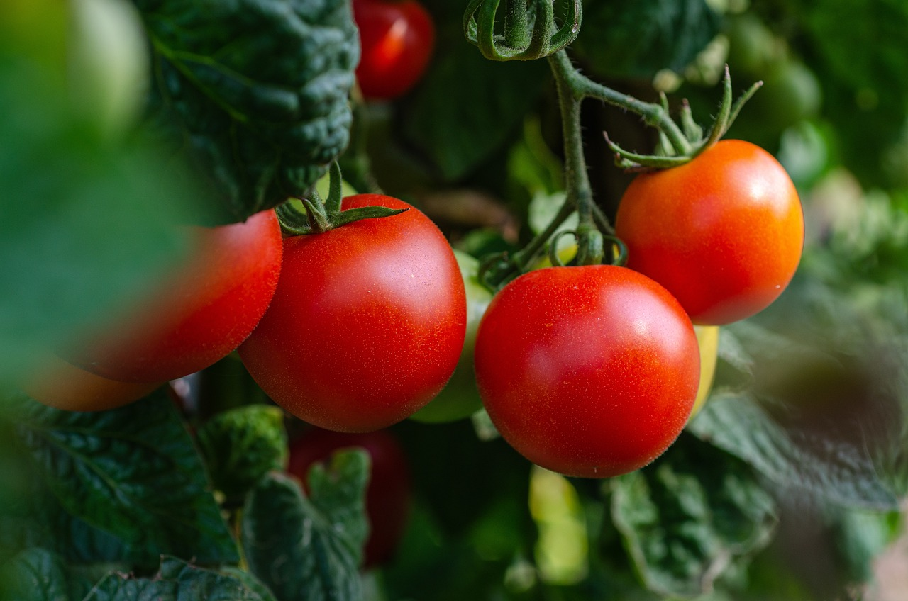

G A R D E N I N G
Optimize Your House!

If you want to go green and have some free time, why not partake in one of the most climate-friendly hobbies out there?
If you’re a homeowner, you’ve probably thought about gardening. And if you have, but haven’t committed yet, then - why not?
Gardening is an incredible way to help the planet and yourself. In this web page, you’ll learn the many benefits of gardening and how it can drastically improve the climate.
Benefits
- Homegrown foods can limit your carbon footprint! Even if the groceries you buy are locally sourced, it still took lots of fossil fuels to get that food from the farm to the grocery store via truck. Eating homegrown food entirely eliminates that step of the process.
- On the topic of food, you can turn your food waste - any organic material you would normally throw in the trash - into compost! This compost will increase the vitality of your soil, leading to healthier plants for you, and will prevent this food waste from breaking down in a landfill.
- One problem with gardening is the waste of clean drinking water when people use their hoses to water the plants. This problem can be solved by using rain barrels! These can store rainwater for future use.
-
Hopefully, this introduction to gardening will inspire you to start your own garden and enjoy the rewards!